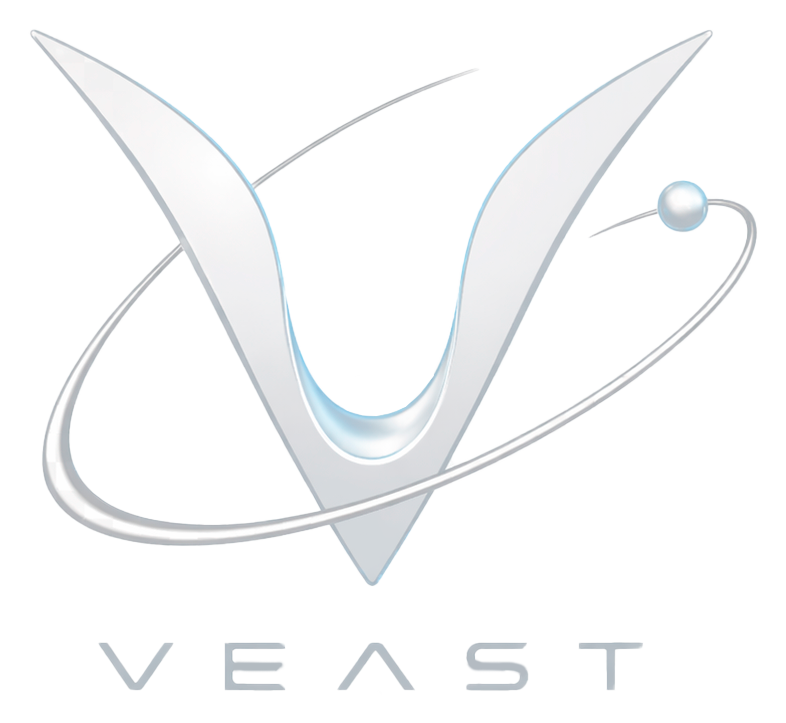
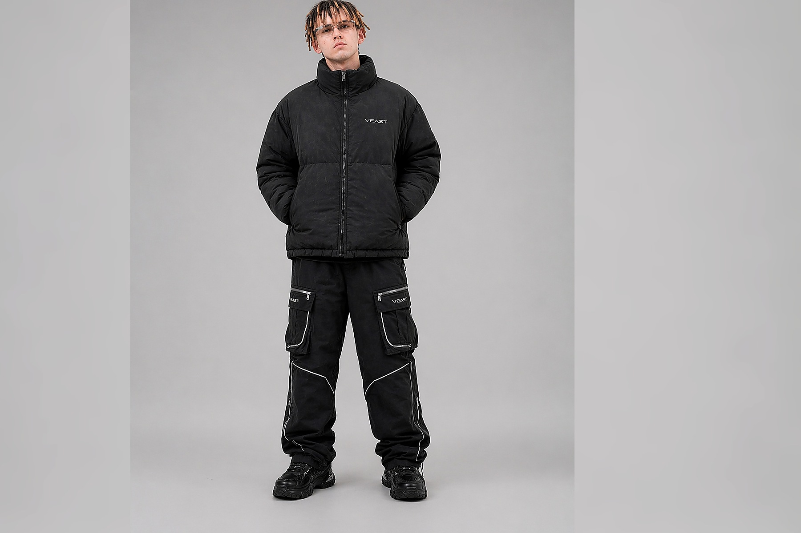

Chrome-графика
Основной визуальный акцент коллекции — холодный хромовый знак VEAST и орбитальные принты, которые создают ощущение технологичного бренда.

streetwear / y2k / techwear
Интернет-магазин одежды с тёмными washed-фактурами, chrome-графикой и свободными streetwear-силуэтами.
drop story
Основной визуальный акцент коллекции — холодный хромовый знак VEAST и орбитальные принты, которые создают ощущение технологичного бренда.
Эффект выстиранной ткани делает вещи визуально мягче и добавляет ощущение живого streetwear-дропа.
Силуэты, палитра и графика соединяют streetwear-посадку, Y2K-вайб и лёгкий techwear-характер.
shopping route
Пользователь открывает каталог через меню, поиск или быстрый раздел.
Фильтрует товары по категории, размеру, цвету и цене.
Проверяет фото, состав, размерную сетку, доставку и возврат.
Добавляет товар в корзину, заполняет форму, получает подтверждение.
new drop
trust block
В карточке есть цена, размеры, состав, уход, доставка и возврат.
Корзина показывает количество, размер, стоимость позиции и итоговую сумму.
После отправки формы заказ проходит проверку и сохраняется в системе.
Пользователь видит оферту и политику конфиденциальности до отправки контактных данных.

orbit drop visual
VEAST ORBIT DROP собран вокруг тёмных washed-фактур, холодной chrome-графики и свободных streetwear-силуэтов. Поэтому каталог, карточки товара и главная страница выглядят как единая коллекция, а не как набор случайных позиций.
В каталоге пользователь видит чистый товар, а внутри карточки — модель, детали и полный визуал. Такой подход делает сайт ближе к настоящему fashion-магазину и помогает быстрее понять вещь перед покупкой.
Открыть каталогfaq
Да. Для основного сценария достаточно корзины и формы оформления заказа.
Заказ проверяется, сохраняется в системе и отображается на странице подтверждения.
Сайт показывает пустое состояние и ведёт пользователя обратно в каталог.